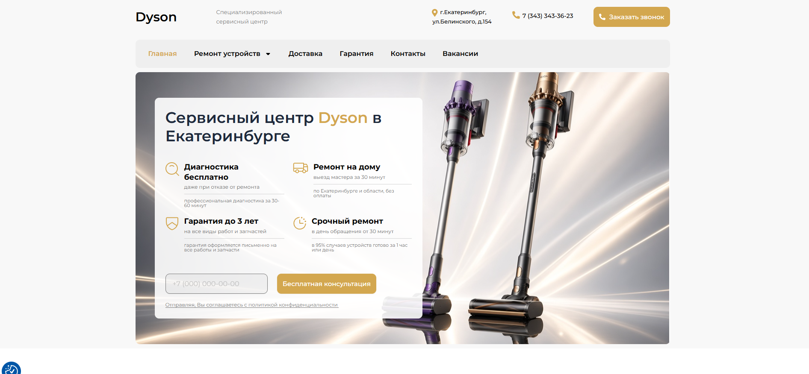

Все работы
Вёрстка · WordPress
Dyson Service
Лендинг сервисного центра Dyson в Екатеринбурге.
HTMLCSSWordPress

Задача
Сверстать доверительный сервисный лендинг с услугами и формой заявки.
Что сделано
- Hero с продуктами и карточкой услуг
- Блоки: диагностика, выезд, гарантия, срочный ремонт
- Форма консультации и контакты
- Адаптив и фирменные акценты Dyson
Технологии
HTML, CSS, WordPress